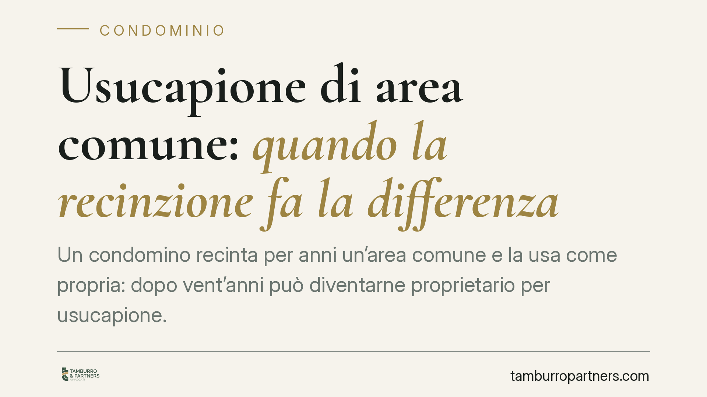

Usucapione di area comune: quando la recinzione fa la differenza
Un condomino recinta per anni un'area comune e la usa come propria: dopo vent'anni può diventarne proprietario per usucapione. Il principio, applicato dalla giurisprudenza di legittimità, impone a condominio e costruttore di vigilare. Il mero richiamo catastale del bene comune nei rogiti non vale, da solo, a interrompere il possesso altrui.

Il principio in sintesi
Le aree comuni elencate dall'art. 1117 c.c. (cortili, androni, spazi verdi, parcheggi condominiali) appartengono a tutti i condomini. Tuttavia, la proprietà comune non è intangibile: se uno dei condomini se ne appropria di fatto in modo esclusivo e continuativo, può maturarne l'acquisto per usucapione.
La Corte di Cassazione Civile ha più volte confermato che il possesso idoneo a usucapire deve manifestarsi con atti incompatibili con l'uso comune. La recinzione dell'area è l'esempio tipico: segnala in modo inequivoco la volontà di escludere gli altri condomini dal godimento del bene.
> Nota redazionale: la pronuncia indicata dalla fonte (Cass. ord. n. 23931/2026) va verificata prima di ogni citazione pubblica, poiché numero e anno non risultano al momento confermati. Il principio esposto è comunque consolidato nella giurisprudenza di legittimità.
Inquadramento normativo
L'usucapione ordinaria dei beni immobili si compie con il possesso continuato per vent'anni (art. 1158 c.c.). Esistono regimi abbreviati in presenza di titolo idoneo e buona fede, che qui non rilevano: il caso tipico dell'area comune occupata è quello ventennale.
Sul fronte dell'interruzione, va fatta una precisazione tecnica spesso trascurata. L'art. 2944 c.c. prevede che la prescrizione sia interrotta dal riconoscimento del diritto da parte di chi ne è gravato. Questa norma, però, è dettata in materia di prescrizione: si applica all'usucapione soltanto grazie all'art. 1165 c.c., che estende al possesso le cause di interruzione della prescrizione in quanto compatibili. È questo il raccordo normativo corretto.
La conseguenza pratica è rilevante. Perché il termine di usucapione si interrompa non basta un atto qualunque: occorre un atto che privi il possessore del possesso, oppure un riconoscimento del diritto altrui da parte sua. Il mero richiamo catastale del bene comune nei rogiti di compravendita ha valore descrittivo, non costitutivo: fotografa la situazione documentale, ma non incide sul possesso esercitato sul campo.
Compossesso o possesso esclusivo?
Il punto decisivo è distinguere due situazioni. Nel compossesso, tutti i condomini usano il bene comune secondo la sua destinazione: nessuno può usucapire contro gli altri, perché manca l'esclusività. Nel possesso esclusivo, invece, un condomino sottrae stabilmente l'area all'uso collettivo e la gestisce come propria.
Solo il secondo scenario apre la strada all'usucapione. La recinzione è il segnale esteriore che trasforma il godimento in possesso esclusivo opponibile. Da quel momento inizia a decorrere il termine ventennale, e l'inerzia del condominio diventa un rischio concreto.
Implicazioni pratiche
Per il condominio, la lezione è netta: l'occupazione di un'area comune non si sana con il tempo a favore di chi la subisce, ma a favore di chi la esercita. Lasciar correre significa consolidare l'acquisto del condomino intraprendente.
Per il costruttore che conservi la proprietà di spazi non ancora trasferiti, vale lo stesso principio: l'annotazione catastale non protegge il bene se altri lo possiedono stabilmente.
Cosa fare in concreto
- Mappate le aree comuni confrontando titoli, planimetrie catastali e stato di fatto: individuate subito recinzioni, cancelli o usi esclusivi non autorizzati.
- Agite entro termini certi: un reclamo verbale non interrompe l'usucapione. Serve un atto idoneo ai sensi dell'art. 1165 c.c., tipicamente una domanda giudiziale a tutela del possesso o della proprietà comune.
- Documentate l'uso collettivo: delibere, verbali e comunicazioni che attestino il godimento comune del bene indeboliscono la tesi del possesso esclusivo altrui.
- Non confidate nel dato catastale: verificate chi occupa materialmente l'area, non solo chi risulta sulla carta.
- È opportuno portare la questione all'ordine del giorno dell'assemblea appena emerge un uso esclusivo prolungato, deliberando le iniziative a tutela.
La proprietà comune non si difende da sé.
Disclaimer
Contributo informativo a cura di Tamburro & Partners Avvocati (Avv. Giuseppe Tamburro). Non costituisce parere legale.
Ogni condominio ha una storia a sé.
Se gestisci un'amministrazione e vuoi un confronto su una specifica questione condominiale, scrivi allo studio. Ti rispondiamo entro un giorno lavorativo.